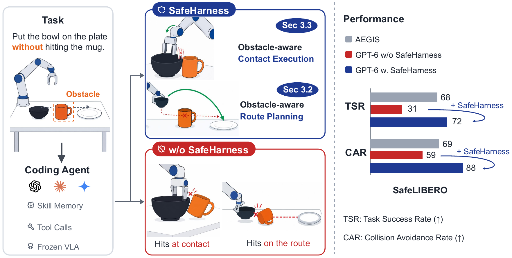
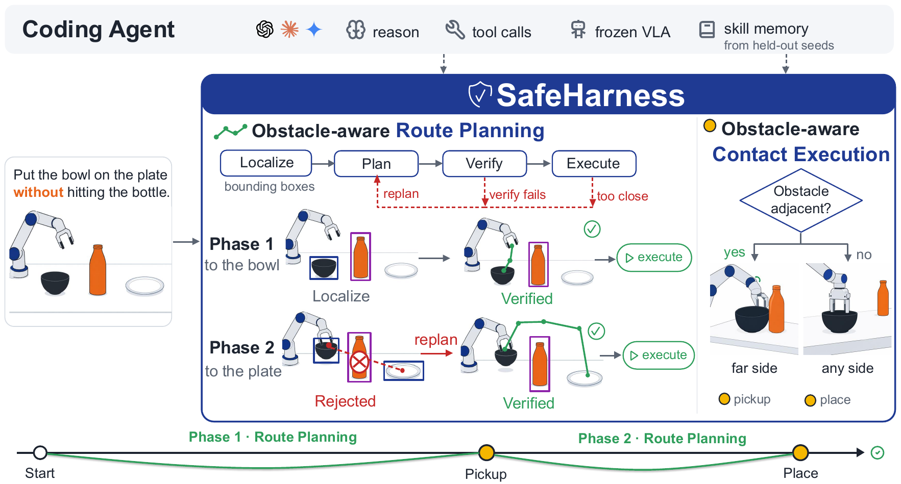
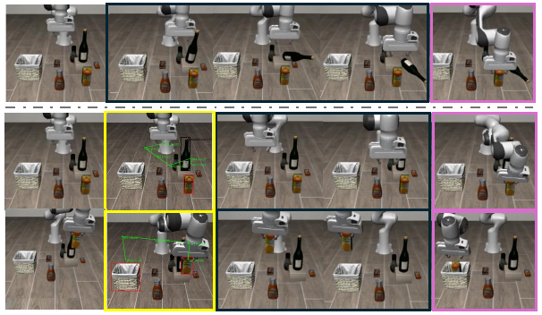

Coding agents now drive robots without robot-specific training, but pair the goal with an obstacle and they collide in most cases, even while reasoning about the obstacle in their traces under an explicit do-not-touch prompt. Neither perception nor instruction is at fault; planning is, with no notion of a clearing route, no replanning, and no constraint-aware contact. SafeHarness adds two obstacle-aware harnesses and reaches 71.9% success with 87.5% avoidance.
The agent pursues the goal and treats completion as its sole objective, neglecting safety. Because the traces discuss the obstacle and the prompt forbids touching it, the authors exonerate perception and instruction and indict planning, where the stated constraint never becomes a priority.
Decomposing tasks into a route phase and a contact-rich moment locates two faults: along the route the model has no notion of a clearing route and never replans once a route goes infeasible; at contact it is unaware that execution itself is bounded by the same constraint.
Obstacle-aware route planning grounds objects as bounding boxes, draws candidate routes as waypoint sequences, then plans in advance, verifies, replans when necessary, and only then executes. Obstacle-aware contact execution selects the contact position so the contact itself avoids the obstacle.
The headline table reports per-suite success and avoidance for VLA baselines against harnessed backbones: OpenVLA-OFT and pi0.5 collapse on avoidance, AEGIS is competitive, and the harnessed GPT-6 row averages 71.9% success with 87.5% avoidance, matching the abstract's claims.
| Method | Spatial | Goal | Object | Long | Average | |||||
|---|---|---|---|---|---|---|---|---|---|---|
| OpenVLA-OFT kim2025oft | 36.5 | 8.3 | 24.3 | 19.5 | 28.8 | 11.5 | 15.3 | |||
| black2025pi05 | 59.3 | 14.0 | 60.0 | 20.0 | 57.5 | 18.0 | 54.3 | |||
| AEGIS hu2025vlsa | 68.5 | 68.0 | 82.8 | 76.5 | 72.5 | 71.3 | 46.3 | |||
| (GPT-5.5) | 72.0 | 75.0 | 52.0 | 88.0 | 82.0 | 85.0 | 72.0 | |||
| (GPT-6) | 75.0 | 75.0 | 75.0 | 100.0 | 75.0 | 75.0 | 62.5 | |||
| tabular |



Abstract
Coding agents have emerged as a promising paradigm for robot manipulation: a language model writes the robot controller as a program, and agents built in this way now operate robots without robot-specific training.Whether this paradigm is also safe, however, has not been asked. We evaluate coding agent under a safety constraint, where each task pairs a manipulation goal with an obstacle the robot must not touch. The agent pursues the goal but collides with the obstacle in most cases, treating task completion as its sole objective while neglecting safety. The agent reasons about the obstacle in its traces, and the prompt already forbids touching it, so neither perception nor instruction is at fault; the fault lies in the planning, where the stated constraint never becomes a priority. By decomposing manipulation into a route phase and a contact-rich moment, we locate the source of the failure. Along the route, the model cannot prioritize the safety constraint, having no notion of a clearing route and none of replanning once a chosen route becomes infeasible. At the contact, it is unaware that contact execution is bounded by the same constraint. To close this gap, we present SafeHarness, which equips the model with two obstacle-aware harnesses that enable it to prioritize the safety constraint. Obstacle-aware route planning grounds the objects as bounding boxes and draws candidate routes over them as sequences of waypoints. The agent then plans a route in advance, verifies it, replans when necessary, and only then executes it. Obstacle-aware contact execution instead selects the contact position so that the contact itself avoids the obstacle. SafeHarness attains 71.9% task success and 87.5% collision avoidance, surpassing the previous SOTA by 6.5% and 27.0%, respectively. These results are $2.3\times$ and $1.5\times$ those of the same agent without harnesses.